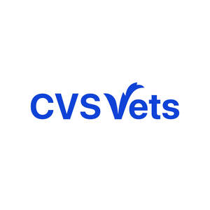
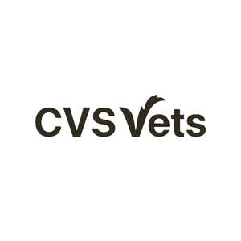

Trade Mark Journal No.2025/052 26 December 2025
UK00004295018 14 November 2025 (3,5,18,20,21,28,31,35,36,42,43,44,45)
Mark 1

Mark 2

- Class 3
- Shampoos and soaps; conditioners; toiletries; dentifrices; dental care preparations; skincare preparations; fragrances; grooming preparations; all the aforesaid goods for use on animals; cleaning preparations for animal cages.
- Class 5
- Pharmaceutical and veterinary products and preparations for animals; medicines for animals; veterinary vaccines; veterinary preparations and substances; antibiotics for veterinary use; diagnostic preparations for veterinary use; animal washes and lotions and other grooming preparations; flea control products; flea collars; flea sprays; flea powders; preparations for destroying vermin; fungicides; insecticides; parasiticides; bactericides; animal feed additives and supplements; feed supplements for veterinary use; medicated animal feed; nutritional supplements for animals (non-medicated); vitamin and mineral supplements for pets; dietary supplements for animals; dietary pet supplements in the form of pet treats; medicated shampoos.
- Class 18
- Pet accessories made from leather and/or imitation leather being collars for pets, leads for pets, harnesses for pets, pet clothing and garments for pets; animal harnesses; pet collars and leads; coats and clothing for animals; feed bags for animals; bags for carrying animals; rawhide chews.
- Class 20
- Animal bedding; hard beds and baskets for household pets; upholstered mats, cushions, mattresses and bedding, all for household pets; sleeping baskets for domestic animals; kennels, hutches and carriers for animals; scratching posts and pads; pet doors and cat flaps (non-metal); pet runs; identification tags for animals, not of metal.
- Class 21
- Grooming aids and toothbrushes for animals; feeding troughs for animals; combs for pets; brushes for pets; animal cages; litter trays; litter scoops; flea combs; plastic containers for dispensing food and drink to pets; animal feeders.
- Class 28
- Games, toys and playthings for animals.
- Class 31
- Foodstuffs and beverages for animals; animal feed; pet treats; pet snacks; cereals and grains for animal consumption; animal foodstuffs containing hay; edible chews for animals; fish and meat for animal consumption; canned or preserved foods for animals; yeast for animals; dry animal foods; brawns and frozen foodstuffs, all being meat and poultry based, for animals; tinned dog food; puppy food; nutritionally complete dry dog food; meat and chocolate based animal treats, in loose and packet form; loose biscuits for animals; nutritional foods for older/less active animals; horse feed; tinned cat foods; nutritionally complete dry cat food in pellet form; animal litter; small animal bedding; small animal treats; rabbit food; additives for animal foodstuffs not for medical purposes; hay; straw.
- Class 35
- Retail services in relation to veterinary goods, veterinary and sanitary preparations, veterinary products, veterinary articles, veterinary apparatus, veterinary instruments, veterinary washes and lotions and other grooming preparations; wholesale services in relation to veterinary goods, veterinary and sanitary preparations, veterinary products, veterinary articles, veterinary apparatus, veterinary instruments, veterinary washes and lotions and other grooming preparations; retail services for pharmaceutical, veterinary and sanitary preparations and medical supplies, all being for animals; retail and wholesale services in relation to collars for pets, leads for pets, harnesses for pets, pet clothing and garments for pets, feed bags for animals, bags for carrying animals, rawhide chews; retail and wholesale services in relation to animal bedding, hard beds and baskets for household pets; retail and wholesale services in relation to upholstered mats, cushions, mattresses and bedding, all for household pets; retail and wholesale services in relation to sleeping baskets for domestic animals, kennels, hutches and carriers for animals, scratching posts and pads, pet doors and cat flaps, pet runs, identification tags for animals; retail and wholesale services in relation to grooming aids and toothbrushes for animals, feeding troughs for animals, combs for pets, brushes for pets, animal cages, litter trays, litter scoops, flea combs, plastic containers for dispensing food and drink to pets, animal feeders; retail and wholesale services in relation to games, toys and playthings for animals; retail and wholesale services in relation to foodstuffs and beverages for animals, animal feed, pet treats, pet snacks, cereals and grains for animal consumption, animal foodstuffs containing hay, edible chews for animals, fish and meat for animal consumption, canned or preserved foods for animals, yeast for animals, dry animal foods, tinned dog food, nutritionally complete dry dog food, edible treats for animals, horse feed, tinned cat foods, cat food, rabbit food, additives for animal foodstuffs not for medical purposes, animal litter, hay, straw; operation of customer loyalty schemes; operation of customer incentive and discount schemes; operation of customer loyalty schemes for pet owners; operation of customer loyalty schemes in respect of veterinary products and services; arranging and operating of collective buying services namely buying group services, group buying services, purchasing group services and group purchasing services in order to negotiate collective buying discounts, rebates and preferential terms; management of a collective purchasing scheme for the benefit of veterinary practitioners; arranging the buying of goods and services for others; administration of discount programs through the operation of buying group services; administration of discount programs through the operation of purchasing group services; administration of loyalty programs; information, advisory and consultancy services in relation to all of the aforesaid.
- Class 36
- Insurance brokerage relating to pets; insurance, reinsurance and financial services relating to pets; information and advisory services relating to the aforesaid services.
- Class 42
- Veterinary laboratory services; laboratory analysis; laboratory testing services; laboratory research; analytic laboratory services; blood analysis services; all of the aforesaid services in relation to animals and excluding chorionic villus sampling services; research and development skills in the field of immunology for animals.
- Class 43
- Boarding for animals.
- Class 44
- Veterinary services; veterinary surgical services; veterinary assistance; veterinary advice; pet and animal care services; animal hospitals; veterinary dentistry; laboratory services relating to the treatment of animals; provision of information relating to veterinary services and pharmaceuticals; vaccination services for animals; pathology services in relation to animals; medical analysis for the diagnosis and treatment of animals; grooming services for pets and animals; advisory and consultancy services relating to all the aforesaid and animal care and welfare; all of the aforesaid excluding chorionic villus sampling services.
- Class 45
- Crematorium services for pets; adoption agency services relating to pets.
CVS (UK) Limited
Representative: Murgitroyd & Company